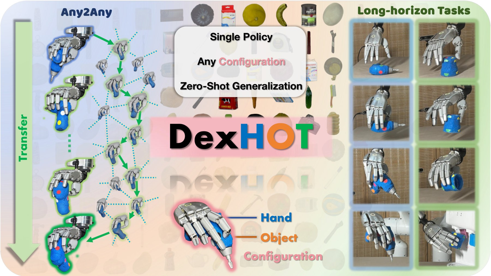

DexHOT: Learning Hand–Object Configuration Transfer for Dexterous Manipulation
First author
DexHOT formulates dexterous manipulation as hand–object configuration transfer. A single relation-conditioned policy learns from 1.2M feasible configurations across 120 objects and composes long-horizon behaviors through closed-loop subgoals. It achieves 80.5% / 69.4% transfer success on seen / unseen objects in simulation, 61.5% over 200 real-robot transfers, and 90% across six long-horizon tasks.